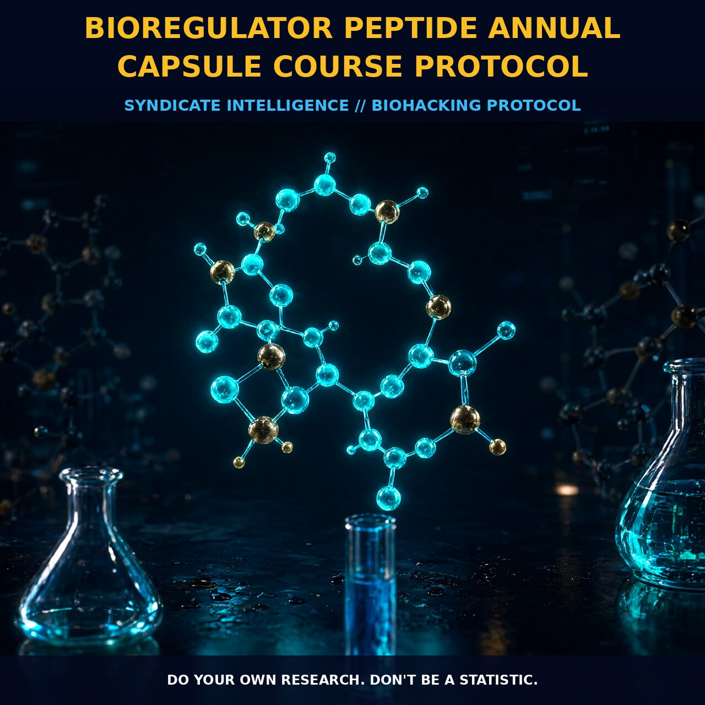

Bioregulator Peptide Annual Capsule Course Protocol

1. The Bioregulator Foundation
Rooted in the rigorous gerontology research of Vladimir Khavinson, this protocol leverages specific cytomaxes—bioregulator peptides extracted from animal tissues or synthesized as cost-effective cyogens—to prevent protein degradation in critical biological structures. Unlike generic supplements that merely boost levels, these compounds act as targeted signaling molecules, actively restoring the biological age of tissues by addressing the root causes of structural decay.
The synthesis process ensures these compounds retain full structural integrity for oral administration, allowing them to interact directly with cellular machinery without the complexity of injectable routes. While Russian data confirms that injectable forms offer maximum absorption, the dual availability allows for efficient modulation of protein synthesis pathways through either daily capsules or potent vials, depending on individual preference and logistical needs.
2. Clinical Efficacy and Historical Data
The historical efficacy of bioregulator peptides is anchored by a significant six-to-eight-year clinical trial involving 266 older adults, concluding in 2003. This research demonstrated that these molecules are not just supportive but are promising anti-aging agents capable of treating conditions such as diabetes and gastritis while normalizing immune system function.
By focusing on the prevention of protein loss rather than simple supplementation, bioregulator peptides maintain the structural integrity of cells over time. This mechanistic approach provides a clear, evidence-based pathway for extending healthspan through the sustained maintenance of cellular architecture and function, offering a robust defense against long-term biological deterioration.
3. Targeting the 'Four Killers'
The core value of this annual course lies in its ability to address the "Four Killers" by enhancing repair mechanisms across vital organ systems including the heart, brain, and immune network. Crystagen plays a pivotal role by restoring immune function, creating a broad-spectrum defense against cellular decline and supporting the natural clearance of senescent cells.
Simultaneously, Vesugen targets the vascular system, improving blood vessel protein synthesis to ensure efficient nutrient delivery and waste removal across the circulatory network. This dual action on immunity and vasculature creates a synergistic effect that amplifies the overall healing response, reducing inflammatory burden and increasing metabolic efficiency.
4. Neural Resilience and Strategic Cycling
In the brain, peptides such as Pinealon facilitate superior protein synthesis within neural tissues, supporting cognitive resilience and mitigating age-related neurological decline. This systematic approach ensures that each organ system receives targeted support based on its specific protein needs, moving beyond a one-size-fits-all supplementation model.
By cycling through different bioregulators annually, the protocol ensures no single pathway is overloaded while providing comprehensive coverage to all major biological systems. This strategic modulation preserves tissue function and delays the onset of deterioration, offering a practical method for negotiating with the aging process itself.
5. Protocol Implementation
For optimal results, the recommendation is an annual course of bioregulator peptides, leveraging low cost and strong supporting data. While professional biohackers often utilize high-dose injections, the standard capsule format offers a sustainable and accessible method for daily integration. Participants may cycle through specific peptides like Crystagen, Vesugen, and Pinealon or utilize comprehensive formulas to cover multiple pathways simultaneously.
For those experimenting with injectable forms, such as the TB500 protocol (five milligrams once or twice weekly), maintaining proper sterility during reconstitution is critical. Monitoring subjective responses alongside objective biomarkers allows for the customization of timing and dosage, building a personalized anti-aging strategy that remains adaptable to modern lifestyle demands.
Prostar Life Hack
Actionable Insight: For maximum bioavailability without the complexity of needles, prioritize synthesized cyogens taken consistently for six months. If you require acute repair or have compromised digestive absorption, switch to injectable Crystagen for a two-week intensive boost before returning to maintenance capsules.
Prostar Life Hack
For maximum bioavailability without the complexity of needles, prioritize synthesized cyogens taken consistently for six months. If you require acute repair or have compromised digestive absorption, switch to injectable Crystagen for a two-week intensive boost before returning to maintenance capsules.
[ AUTHOR: LEAD TECHNICAL RESEARCHER ]
[FRESH ON CHAIN: 72934898430f631f... ]